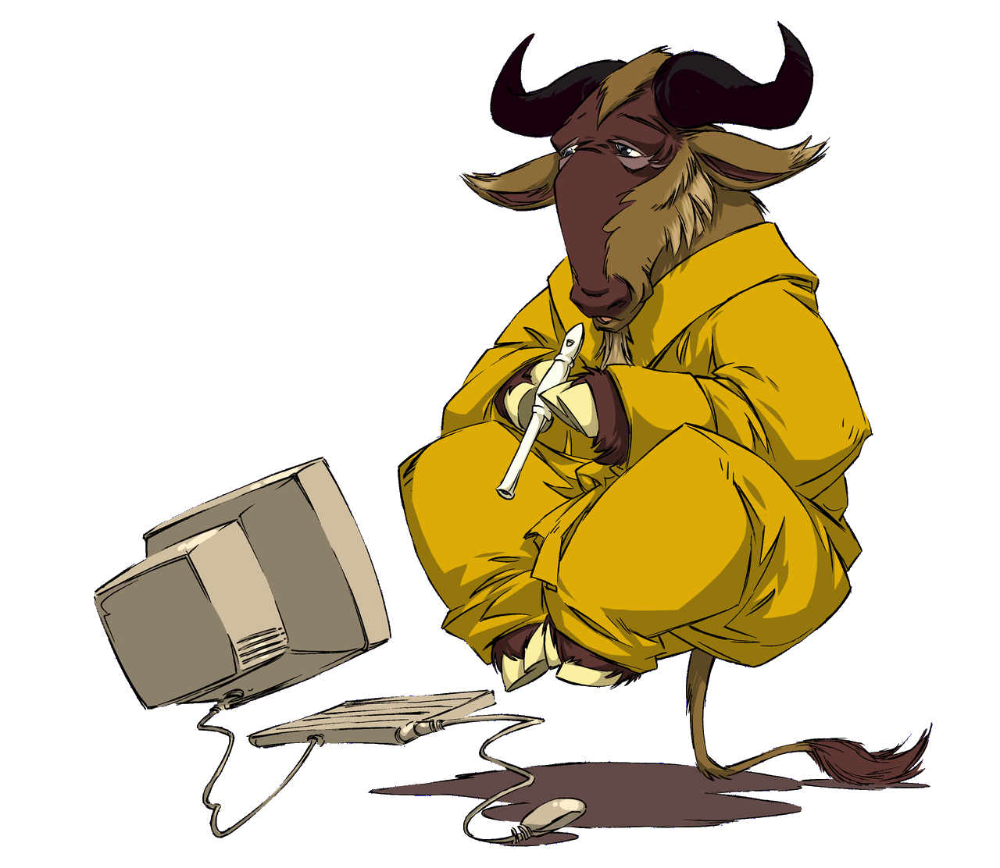

Programación y Administración de Sistemas
Programación y Administración de Sistemas

Bienvenid[o|a|e] a la web de la asignatura “Programación y Administración de Sistemas (curso 2022-2023)”. Estos apuntes son una actualización de los apuntes del profesor Pedro A. Gutiérrez de cursos anteriores.
Aquí encontrarás progresivamente el material de teoría de la asignatura en formato HTML navegando por el menú de la izquierda. El resto del material lo tienes disponible en la plataforma moodle de la UCO.
Al final de cada tema hay una sección sobre el proyecto de la asignatura de construcción de un sistema informático con GNU/Linux.
Contenido en PDF
Puedes acceder también al contenido de esta asignatura en formato PDF imprimible: